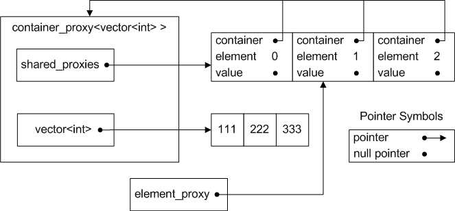
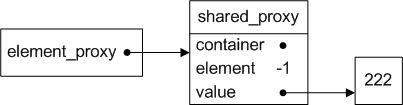

|
|
Boost.Python
|
The main iterface to the library is via an object which adds a
number of Python functions to a class via a single
def call. The selection of what Python functions to
add happens transparently for instances of the standard
container templates [1], so that code like
the following should compile and "just work".
class_< std::vector<int> > ("vector_int")
.def (our_namespace::container_suite< std::vector<int> >());
The container_suite object achieves this using the
def_visitor interface, which provides a hook for
the def function to install multiple Python methods
in one call. If the container element type (int in
the example above) is a user-defined type, you will have to
expose this type to Python via a separate class_
instance.
[1] if your compiler does not support partial template specializations, you will have to explicitly select the right algorithms and traits information, as described in the compiler workarounds section.
The normal interface to the container suite is via the
container_suite.hpp header, which is summarized
below:
#include <boost/python/return_by_value.hpp>
#include <boost/python/return_value_policy.hpp>
#include "algo_selector.hpp"
#include "visitor.hpp"
namespace our_namespace {
typedef return_value_policy<return_by_value> default_container_policies;
template<class Container, class Algorithms = algo_selector<Container> >
struct container_suite
: public visitor<Algorithms, default_container_policies>
{
template<typename Policy>
static visitor<Algorithms, Policy> with_policies (Policy const &policy);
};
}
Some important points to note about container_suite:
our_namespace::algo_selector
template, which uses partial template specialization, to
select what functionality to provide for the container.
our_namespace::visitor
template, using a return_by_value return
policy. This is a reasonable default, and follows the
Boost.Python idiom of passing a default-constructed object
to the def function.
with_policies static function template
generates different instances of the
our_namespace::visitor template, with
client-provided policies.
container_suite static member function
with_policies as in the following example:
class_< std::list<heavy_class> > ("list_heavy_class")
.def (our_namespace::container_suite< std::list<heavy_class> >
::with_policies (my_policies));
It can be tempting to use return_internal_reference
if the container elements are expensive to copy. However, this
can be quite dangerous, since references to the elements can
easily become invalid (e.g. if the element is deleted or
moved). The Boost.Python code for
return_internal_reference can only manage the
lifetime of the entire container object, and not those of the
elements actually being referenced. Various alternatives exist,
the best of which is to store the container elements indirectly,
using boost::shared_ptr or an equivalent. If this
is not possible, container_proxy may provide a
solution, at least for vector-like containers.
The container_suite object typically adds more than
one function to the Python class, and not all of those functions
can, or should, use exactly the same policies. For instance, the
Python len method, if provided, should always
return its result by value. The library actually uses up to
three different sets of policies derived from the one provided
to the with_policies function. These are:
default_call_policies for result conversion.
void) use the second option. The third option
applies only to the slice version of __getitem__,
which generates a Python list by applying the return conversion
policies to each element in the list.
The container_suite template relies on six main
support templates, four of which are suitable for specialization
or replacement by client code. The following diagram shows the
templates [2] and their dependencies, with
the replaceable ones highlighted in grey.

|
| Diagram 1. Overview of class dependencies |
[2] Actually, Algorithms and
ContainerTraits don't represent individual
templates in the diagram, but groups of related
templates. For instance, there are templates called
list_algorithms and assoc_algorithms,
among others. The algo_selector template selects
which algorithms and container traits to use on the basis of
partial template specializations for the known container types.
A ValueTraits class provides simple information
about the type of value stored within a container that will be
exposed to Python via the container_suite
interface. It controls the provision of some operations that are
dependant on the operations supported by container elements (for
instance, find requires a comparison operator for
the elements). A ValueTraits class also provides a
hook called during initialization of the Python class, which can
be used for custom processing at this point.
The following table lists the static constants required in a
ValueTraits class:
| Static constant | Type | Meaning |
|---|---|---|
equality_comparable
|
bool |
Whether the value supports comparison via
operator==.
|
lessthan_comparable
|
bool |
Whether the value supports comparison via
operator<.
|
A ValueTraits class should provide the following
member function template, which will be called during execution
of the def call for the container suite:
template <typename PythonClass, typename Policy> static void visitor_helper (PythonClass &, Policy const &);
In order to include a custom ValueTraits class into
the container suite, it is easiest to supply it as a
specialization of the template
our_namespace::value_traits for the container's
element type. The existing ContainerTraits classes
all make use of
value_traits<container::value_type>, and so
will use a specialization for the value type if available. The
default, unspecialized, version of value_traits
defines equality_comparable as true
and has an empty implementation of visitor_helper.
As an example, if a user defined type does not have any
comparison operations, then there will probably be compile-time
errors caused by an attempt to provide the Python
find or sort methods. The solution is
to write a specialized version of
our_namespace::value_traits that disables the
appropriate features. For example:
namespace our_namespace {
template<>
struct value_traits<my_type> : public value_traits<int>
{
static bool const equality_comparable = false;
static bool const lessthan_comparable = false;
};
}
In this example, there is no need to perform any processing in
the visitor_helper function, and deriving from an
unspecialized version of the template (e.g.
value_traits<int>) exposes an empty
visitor_helper.
namespace our_namespace {
template<typename T>
struct value_traits {
static bool const equality_comparable = true;
static bool const lessthan_comparable = true;
template<typename PythonClass, typename Policy>
static void visitor_helper (PythonClass &, Policy const &)
{ }
};
}
A ContainerTraits class serves three
purposes. Firstly, it identifies what facilities the container
supports in principle (i.e. either directly or via some support
code). Secondly, it identifies the types used to pass values
into and out of the supported operations. Thirdly, it provides a
hook for additional code to run during initialization of the
Python class (i.e. during the def call for the
suite).
Note that a ContainerTraits class can be any class,
derived from the existing implementations or not, as long as it
meets the requirements listed in the following sections.
ContainerTraits class should define. Note that these
must be compile-time constants, since parts of the library
use these constants to select between template specializations.
The constants must at least be convertible to the type shown in
the second column.
| Static constant | Type | Meaning | Influence |
|---|---|---|---|
has_copyable_iter
|
bool
|
Whether copies of an iterator are independant [3] |
Required for len and __iter__
|
is_reorderable
|
bool
|
Whether it is possible to re-order the contents of the container. |
Required for reverse and sort
|
has_mutable_ref
|
bool
|
Whether container elements can be altered via a reference |
Determines is_reorderable for most containers.
|
has_find
|
bool
|
Whether find is possible in principle (via member function or otherwise) |
__contains__,
index,
count,
has_key
|
has_insert
|
bool
|
Whether it is possible to insert new elements into the container. |
insert,
extend,
slice version of __setitem__
|
has_erase
|
bool
|
Whether it is possible to erase elements from the container. |
__delitem__,
slice version of __setitem__
|
has_push_back
|
bool
|
Whether container supports insertion at the end. |
append
|
has_pop_back
|
bool
|
Whether container supports element deletion at the end. | Currently unused |
index_style
|
enum IndexStyle
|
Type of indexing the container supports [4] |
__getitem__,
__setitem__,
__delitem__,
__iter__,
extend,
index,
count,
has_key
|
| [3] | For example, copies of stream iterators are not independant. All iterator copies refer to the same stream, which has only one read and one write position. |
| [4] |
index_style_none, no indexing at all
(e.g. list)index_style_linear, continuous integer-like
index type (e.g. vector)index_style_nonlinear, indexing via other
types (e.g. map).
|
The following table lists the type names that must be defined in
a compatible implementation of ContainerTraits.
The large number of types is supposed to provide flexibility for
containers with differing interfaces. For example,
map uses the same type for searching and "indexing"
(i.e. find and operator[]) so
key_type and index_type would have to
be the same. In contrast, searching a vector would
typically use a different type to that used for indexing into a
vector.
| Type name | Meaning |
|---|---|
container
|
The type of the C++ container. |
size_type
|
The type used to represent the number of elements in the container. |
iterator
|
The container's iterator type. This should be a non-const iterator unless the container itself is const. |
index_type
|
The type used to represent indexes extracted from a
__getitem__ call (and others). For
index_style_linear, this should be a
signed type, so that negative indices can be
processed. For index_style_nonlinear, this
will most likely be the same type as
key_type.
|
index_param
|
The type to use when passing index_type into
a function.
|
value_type
|
The type to use when copying a value into or out of the container. |
value_param
|
The type to use when passing value_type into
a function.
|
key_type
|
The type used for search operations like find
and count.
|
key_param
|
The type to use when passing key_type into a
function.
|
reference
|
The type to use when returning a reference to a container element. |
value_traits_
|
Traits for the container elements. See the ValueTraits section for information about the requirements on this type. |
ContainerTraits class should provide a static member
function template as follows:
template <typename PythonClass, typename Policy> static void visitor_helper (PythonClass &, Policy const &);
Typically, the implementation would just forward the call to the
equivalent function in the value_traits_ class.
It may be possible to mix your own ContainerTraits
class with one of the existing Algorithms
implementations, thus saving yourself a fair bit of work. The
easiest way to do this would be to specialize the
algo_selector template for your container type,
using public deriviation to get the implementation from one of
the existing Algorithms templates. For example,
assuming that default_algorithms is suitable for
your container:
namespace our_namespace {
template<>
struct algo_selector<my_container>
: public default_algorithms<my_container_traits>
{
};
}
Alternatively, you could select the algorithms and traits using
the visitor template directly, as described in the
compiler workarounds section.
The Algorithms requirements are designed to provide
a predictable interface to any container, so that the same
visitor code can expose any supported container to
Python. An implemention of Algorithms does this by
providing functions and typedefs with fixed names. The exact
interfaces to the functions can vary to some extent, since the
def function calls used internally by the
visitor deduce the function type
automatically. However, certain points must be confomed to:
container
& as first parameter.
ContainerTraits.
The block of code below shows the definition of the
default_algorithms class template, which is the
basis for all current implementations of
Algorithms. The typedefs that it defines are
primarily for convenience within the implementation itself,
however they are also required by the slice_handler
template, if slices are supported. Note that
default_algorithms derives all of the type
information from the container_traits template
argument, which allows the same implementation to be used for
various container types.
namespace our_namespace {
template<typename ContainerTraits>
struct default_algorithms
{
typedef ContainerTraits container_traits;
typedef typename ContainerTraits::container container;
typedef typename ContainerTraits::iterator iterator;
typedef typename ContainerTraits::reference reference;
typedef typename ContainerTraits::size_type size_type;
typedef typename ContainerTraits::value_type value_type;
typedef typename ContainerTraits::value_param value_param;
typedef typename ContainerTraits::index_param index_param;
typedef typename ContainerTraits::key_param key_param;
static size_type size (container &);
static iterator find (container &, key_param);
static size_type get_index (container &, key_param);
static size_type count (container &, key_param);
static bool contains (container &, key_param);
static void reverse (container &);
static reference get (container &, index_param);
static void assign (container &, index_param, value_param);
static void insert (container &, index_param, value_param);
static void erase_one (container &, index_param);
static void erase_range(container &, index_param, index_param);
static void push_back (container &, value_param);
static void sort (container &);
template<typename PythonClass, typename Policy>
static void visitor_helper (PythonClass &, Policy const &);
};
}
The existing our_namespace::algo_selector template
uses partial specializations and public derivation to select an
Algorithms implementation suitable for any of the
standard container types. Exactly how it does this should be
considered an implementation detail, and uses some tricks to
reuse various existing Algorithms
implementations. In any case, client code can specialize (or
partially specialize) the algo_selector template
for new container types, as long as the specialized instances
conform to the requirements for Algorithms as
already given.
A new implementation of Algorithms could derive
from any one of the existing implementation templates, or be
completely independant. The existing implementation templates
are listed in the following table. They each take one template
parameter, which should be a valid ContainerTraits
class, as specified in a previous
section.
| Template name | Description |
|---|---|
default_algorithms
|
Uses standard iterator-based algorithms wherever
possible. Assumes that the container provides
begin and end end member
functions that return iterators, and some or all of
size, insert, erase
and push_back, depending on what functions get
instantiated.
|
list_algorithms
|
Similar to the above (in fact, it derives from
default_algorithms) except that it uses
container member functions reverse and
sort instead of the iterator-based versions.
|
assoc_algorithms
|
Also derived from default_algorithms, for use
with associative containers. Uses the container member
function find for indexing, and member
function count instead of iterator-based
implementations.
|
set_algorithms
|
Derived from assoc_algorithms to handle
set insertion operations, which are slightly
different to the map versions.
|
map_algorithms
|
Derived from assoc_algorithms to handle
map insertion and lookup, which are slightly
different to the set versions.
|
The container_proxy template provides an emulation
of Python reference semantics for objects held by value in a
vector-like container. The primary application of this template
is in situations where all of the following apply:
return_internal_reference would be
dangerous.
The container_proxy template wraps a vector-like
container and presents an interface that is similar to that of a
normal vector, but which returns element_proxy
objects instead of plain references to values stored in the
wrapped container. During an operation that alters the position
of an element within the container (e.g. insert)
the container_proxy code updates the relevant proxy
objects, so that they still refer to the original elements of
the container. Any operation that would delete or overwrite a
value in the container (e.g. erase) copies the
to-be-deleted value into its corresponding proxy object. This
means that a proxy's "reference" to an element is robust in the
face of changes to the element's position in the container, and
even that element's removal.
The container_proxy interface is designed to be
convenient to use from C++, and to inter-operate with the
default_algorithms template. It is important that
any code that changes element positions within the
container (at least while proxies for the container exist) uses
the container_proxy interface, to ensure that the
proxies get updated. Of course, the interface introduces some
performance penalties, both in terms of memory usage and run
time.
The Holder template parameter determines how the
container_proxy stores the raw container object.
There are currently two types of holder implemented, the default
identity template which stores it's argument by
value, and the deref template which stores a
(plain) pointer to an external object. It would be possible, for
instance, to create a holder that uses a
shared_pointer instead.
template<class Container
, class Holder = identity<Container> >
class container_proxy
{
public:
typedef typename Container::size_type size_type;
typedef typename Container::difference_type difference_type;
typedef typename Container::value_type raw_value_type;
typedef typename Holder::held_type held_type;
typedef implementation defined value_type;
typedef implementation defined const_value_type;
typedef value_type reference; // Has reference semantics
typedef const_value_type const_reference; // Has reference semantics
struct iterator { implementation defined }
container_proxy ();
explicit container_proxy (held_type const &);
template<typename Iter> container_proxy (Iter, Iter);
container_proxy (container_proxy const &);
container_proxy &operator= (container_proxy const &);
~container_proxy ();
Container const &raw_container() const; // OK to expose const reference
reference at (size_type);
const_reference at (size_type) const;
reference operator[] (size_type);
const_reference operator[] (size_type) const;
size_type size() const;
size_type capacity() const;
void reserve(size_type);
iterator begin();
iterator end();
iterator erase (iterator);
iterator erase (iterator, iterator);
iterator insert (iterator, raw_value_type const &);
template<typename Iter> void insert (iterator, Iter, Iter);
void push_back (raw_value_type const &);
value_type pop_back ();
};
The identity template.
template<typename T> struct identity {
typedef T held_type;
static T & get(T & obj) { return obj; }
static T const & get(T const & obj) { return obj; }
static T create () { return T(); }
static T copy (T const ©) { return copy; }
static void assign (T &to, T const &from) { to = from; }
static void pre_destruction (T &) { }
};
The deref template.
template<typename P> struct deref {
typedef P held_type;
typedef typename boost::iterator_value<P>::type value;
static value & get (P & ptr) { return *ptr; }
static value const & get (P const & ptr) { return *ptr; }
static P create () { return P(); }
static P copy (P const ©) { return copy; }
static void assign (P &to, P const &from) { to = from; }
static void pre_destruction (P &) { }
};
An element_proxy refers to an element of the
container via two levels of indirection – it holds a
pointer to a so-called shared_proxy object, which
has a pointer back to the container_proxy object
and an element index within the wrapped container. This can be
seen in the following diagram, which shows a
|  |
Diagram 2. Example of container_proxy with some
element proxies
|
element_proxy
object refers (indirectly) to the container element with the
value 222. An insertion before this element would increment the
element numbers in the shared_proxy objects so that
the given element_proxy continues to refer to the
same value at its new location. Similary, a deletion before the
element would decrement the affected shared_proxy
element numbers. If the referenced element itself gets deleted
or overwritten, the shared_proxy first takes a
copy of the original value, and is then considered to be
detached from the container_proxy. This
situation is shown below in diagram 3.
|  |
Diagram 3. Example of element_proxy with
detached shared_proxy
|
Note: the suite hasn't yet been tested on a compiler without partial template specialization support. If you have any results with such a compiler (good or bad) please report them on the mailing list for the Python C++-SIG.
It should be possible to use the suite without partial template
specialization support. However, the algo_selector
template will not work, which also means that the default
template parameter for container_suite won't
work. To avoid this problem, the client code must explicitly
select the Algorithms and
ContainerTraits instances to be used. It is
probably easiest to use the visitor template
directly, as in the following example:
using our_namespace;
class_<std::vector<int> > ("vector_int")
.def (visitor <
default_algorithms <
default_sequence_traits <
std::vector <int> > >,
return_value_policy <return_by_value>
>());
This section lists known limitations of the container interfaces. These may or may not get fixed in the future, so check the latest release of Boost and/or the Boost CVS repository. Feel free to submit your own improvements to the mailing list for the Python C++-SIG.
The following Python sequence and mapping functions are not
currently implemented for any containers: keys, values,
items, clear, copy, update, pop, __add__, __radd__, __iadd__,
__mul__, __rmul__ and __imul__. Most of the methods
mentioned (except for pop) present no particular
difficulty to implement. The problem with pop is
that it is incompatible with some return value policies (for
instance, return_internal_reference) since it must
return a copy of an element that has already been removed from
the container. This probably requires an extension to the
container_suite interface, to allow the client code
the option of specifying a different return policy for this
method in particular.
The suite currently restricts itself to the normal Python
container interface methods, which do not expose all of the
interfaces available with the C++ containers. For example,
vector reserve has no equivalent in Python and is
not exposed by the suite. Of course, user code can still add a
def call for this manually.
The map iterator should return only the key part of
the values, but currently returns the whole
std::pair.
The sort method (where provided) should allow an
optional comparison function from Python.
The existing Algorithms should allow a derived
class to replace any of the static member functions without
having to reimplement all of them. For instance, it would be
nice to be able to replace the low-level begin and
end functions in default_algorithms
and have all of the other functions use the replacements
automatically. This would be fairly easy using static
polymorphism, such as the Curiously Recurring Template
Pattern.
The Python Library Reference section on Sequence Types and the Python Reference Manual section on Emulating container types. The C++ Standard.
Thanks to Joel de Guzman and David Abrahams for input and encouragement during the development of the container suite. Joel wrote the original implementation of the indexing support, which provided many of the ideas embodied in the new implementation.
The container suite code and documentation are Copyright (c) 2003 by Raoul Gough, and licensed under the current Boost license.